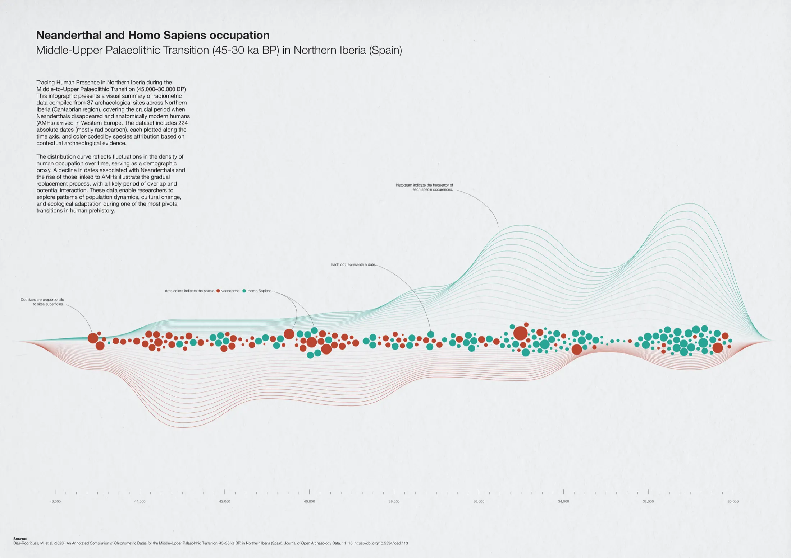

Data visualizations play a key role in archaeological research by transforming complex datasets into accessible and engaging narratives. They help reveal patterns, highlight temporal or spatial dynamics, and support the interpretation of large volumes of information. By combining scientific rigour with clear visual structure, infographics allow researchers to communicate their findings more effectively, not only within the academic community, but also to broader audiences.
This infographic was designed to visually synthesise and make more accessible the dataset presented in Díaz-Rodríguez et al., 2023.
The aim was to translate complex chronological data into a clear, engaging visual narrative that highlights temporal patterns and demographic dynamics during this major prehistoric transition. To do so, I combined classic data visualization tools and advanced vector drawing techniques.